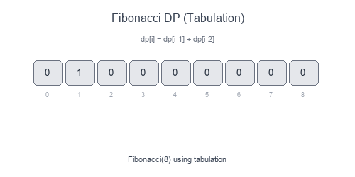

Introduction to Fibonacci Numbers (Dynamic Programming)
The Fibonacci DP pattern covers problems where the solution at step n depends on solutions from the previous few steps (typically n-1 and n-2). These are the simplest DP problems and a great starting point for learning dynamic programming.
Visual Example
Fibonacci with Memoization

Without memoization, calculating fib(5) recomputes fib(3) twice, fib(2) three times, etc. With DP, each value is computed only once.
The Recurrence Pattern
f(n) = f(n-1) + f(n-2) # Fibonacci
f(n) = f(n-1) + f(n-2) + f(n-3) # Tribonacci
f(n) = min(f(n-1), f(n-2)) + cost[n] # Min cost
When to Use
- Counting ways to reach a target (stairs, paths).
- Problems with "previous state" dependencies.
- Optimization over linear sequences.
- Any recurrence involving the last 1-3 states.
Pattern Recipe
- Identify the recurrence: How does
f(n)relate to previous values? - Define base cases:
f(0),f(1), etc. - Choose approach:
- Top-down with memoization
- Bottom-up with tabulation
- Space-optimized with variables
- Implement and return
f(n).
Complexity
- Time: $O(n)$ — each state computed once
- Space: $O(n)$ for table, or $O(1)$ with space optimization
Short Examples — Python
Classic Fibonacci
# Naive recursive - O(2^n) - DON'T USE
def fib_naive(n: int) -> int:
if n <= 1:
return n
return fib_naive(n-1) + fib_naive(n-2)
# Top-down with memoization - O(n)
def fib_memo(n: int, memo: dict = None) -> int:
if memo is None:
memo = {}
if n <= 1:
return n
if n not in memo:
memo[n] = fib_memo(n-1, memo) + fib_memo(n-2, memo)
return memo[n]
# Bottom-up tabulation - O(n)
def fib_table(n: int) -> int:
if n <= 1:
return n
dp = [0] * (n + 1)
dp[1] = 1
for i in range(2, n + 1):
dp[i] = dp[i-1] + dp[i-2]
return dp[n]
# Space-optimized - O(1) space
def fib_optimized(n: int) -> int:
if n <= 1:
return n
prev2, prev1 = 0, 1
for _ in range(2, n + 1):
curr = prev1 + prev2
prev2, prev1 = prev1, curr
return prev1
Climbing Stairs
def climb_stairs(n: int) -> int:
"""Count ways to climb n stairs taking 1 or 2 steps at a time."""
if n <= 2:
return n
prev2, prev1 = 1, 2
for _ in range(3, n + 1):
curr = prev1 + prev2
prev2, prev1 = prev1, curr
return prev1
# Example: n=4 → 5 ways: [1,1,1,1], [1,1,2], [1,2,1], [2,1,1], [2,2]
Min Cost Climbing Stairs
def min_cost_climbing(cost: list[int]) -> int:
"""Minimum cost to reach the top (can start at index 0 or 1)."""
n = len(cost)
if n <= 2:
return min(cost)
prev2, prev1 = cost[0], cost[1]
for i in range(2, n):
curr = cost[i] + min(prev1, prev2)
prev2, prev1 = prev1, curr
return min(prev1, prev2) # Can skip last step
# Example: [10, 15, 20] → 15 (start at index 1, jump to top)
House Robber
def rob(nums: list[int]) -> int:
"""Max sum of non-adjacent elements."""
if not nums:
return 0
if len(nums) == 1:
return nums[0]
prev2, prev1 = 0, nums[0]
for i in range(1, len(nums)):
curr = max(prev1, prev2 + nums[i])
prev2, prev1 = prev1, curr
return prev1
# Example: [2, 7, 9, 3, 1] → 12 (rob houses 0, 2, 4: 2+9+1)
Decode Ways
def num_decodings(s: str) -> int:
"""Count ways to decode '12' → 'AB' or 'L'."""
if not s or s[0] == '0':
return 0
n = len(s)
prev2, prev1 = 1, 1 # dp[0] = 1, dp[1] = 1
for i in range(1, n):
curr = 0
# Single digit (1-9)
if s[i] != '0':
curr += prev1
# Two digits (10-26)
two_digit = int(s[i-1:i+1])
if 10 <= two_digit <= 26:
curr += prev2
prev2, prev1 = prev1, curr
return prev1
# Example: "226" → 3 ways: "BZ", "VF", "BBF"
Minimum Jumps to End
def min_jumps(nums: list[int]) -> int:
"""Minimum jumps to reach last index."""
n = len(nums)
if n <= 1:
return 0
jumps = 0
current_end = 0
farthest = 0
for i in range(n - 1):
farthest = max(farthest, i + nums[i])
if i == current_end:
jumps += 1
current_end = farthest
if current_end >= n - 1:
break
return jumps
# Example: [2,3,1,1,4] → 2 jumps (0→1→4)
Common Variants
| Problem | Recurrence | Base Case |
|---|---|---|
| Fibonacci | f(n) = f(n-1) + f(n-2) |
f(0)=0, f(1)=1 |
| Stairs (1 or 2 steps) | f(n) = f(n-1) + f(n-2) |
f(1)=1, f(2)=2 |
| Stairs (1, 2, or 3 steps) | f(n) = f(n-1) + f(n-2) + f(n-3) |
f(1)=1, f(2)=2, f(3)=4 |
| House Robber | f(n) = max(f(n-1), f(n-2)+nums[n]) |
f(0)=nums[0] |
| Min Cost | f(n) = min(f(n-1), f(n-2)) + cost[n] |
f(0)=cost[0] |
Common Pitfalls
- Forgetting base cases (especially
n=0andn=1). - Off-by-one errors with array indices.
- Not handling edge cases (empty input, single element).
- Stack overflow with naive recursion on large inputs.